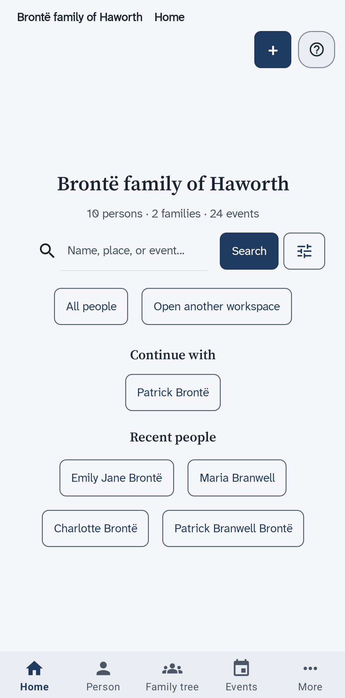
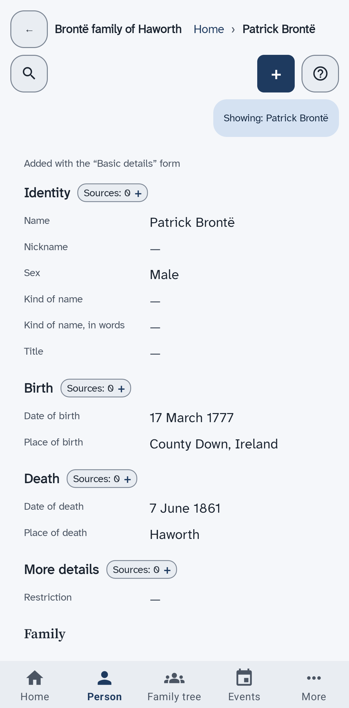
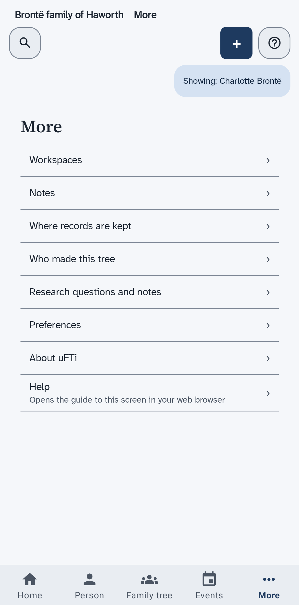
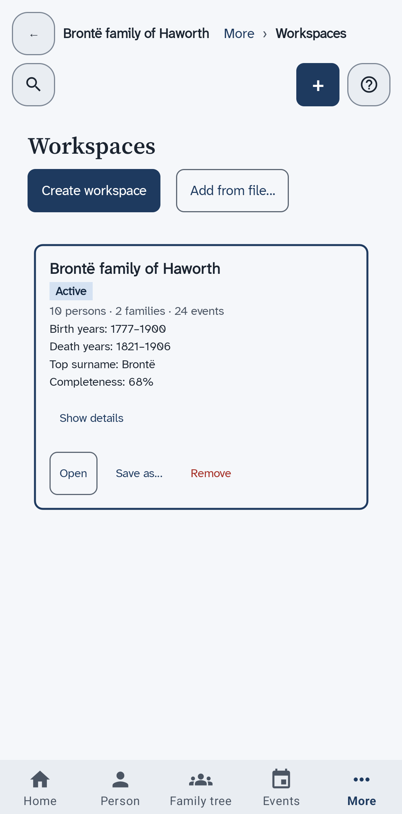

The screens of the app
What each place in the bar along the bottom shows, what the top of every screen holds, and what the More list opens.
The bar along the bottom
The bar stays at the bottom of every screen. It has five places. Some show your whole tree. Others show one person, the person named in the chip that starts with Showing.
| Place | What it shows | Needs a person |
|---|---|---|
| Home | The tree that is open, with a search box and the people you opened last. | No |
| Person | The page of one person. | Yes |
| Family tree | A drawing of the person with parents, partners and children. | Yes |
| Events | The things that happened in that person's life. | Yes |
| More | A list of other places, such as your trees, your notes and the colours. | Some |
Select a personor
No person selected, it needs a person first. Search for someone, then open them. A page says no person is selected shows how.
The top of every screen
A back arrow takes you back one screen. Beside it, the name of the tree and the path to the screen you are on show, such as More then Preferences. Below them are three buttons.
- Search, with a magnifying glass, opens the search.
- + opens the sheet that adds something new. Add another person shows it.
- Help about this screen, with a question mark, opens the guide to the screen you are on in the web browser of your phone.
The chip that starts with Showing names the person the bar is showing. Every field of a form also has a small help button of its own.
Home
This is the first screen. It names the tree that is open and counts its people, families and events. It has a search box, two buttons and, once you have opened people, the names you can go back to. Find a person shows how to search.
- All people lists everyone in the tree.
- Open another workspace shows your trees. Remove a tree from the list starts there.
- Continue with and Recent people list the people you opened last.

Person, Family tree and Events
Change a person shows the page of a person. See a family tree explains the tree. See the events of a person explains the list of events.

The More list
Choose More to see eight places. Each one opens a screen of its own.
- Workspaces lists your family trees, one card for each.
- Notes shows your own notes about the person you are looking at. Add a note to a person shows how to write one.
- Where records are kept lists the archives, libraries and websites that your sources come from. Add a place where records are kept shows how to add one.
- Who made this tree lists the people credited with the tree. Say who made this tree shows how.
- Research questions and notes is your list of questions and ideas. Add a research question shows how to add one.
- Preferences sets the colours and the light or dark look. Choose how the app looks explains it.
- About uFTi shows the version of the app.
- Help opens the guide to the screen you are on in your web browser.
The lists for the whole tree are empty until you add something with +.

Your trees
Choose Workspaces in the More list. Each card is one family tree. It tells you how many people, families and events the tree holds, and which tree is Active.
